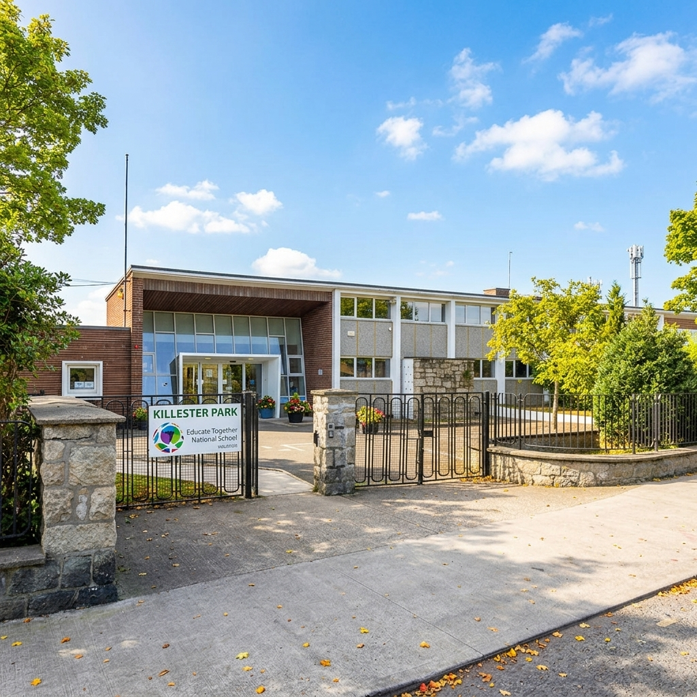

Killester Park Educate Together National School opened its doors in September 2019 to welcome our first Junior Infants class. Founded by dedicated local parents and community advocates, our school fulfills the growing demand for equality-based primary education in the Killester, Raheny, and Clontarf communities.
From our initial temporary accommodation, we moved to our permanent modern facilities on Collins Avenue East in Killester. We have expanded year-on-year to cater for children from Junior Infants right up to 6th Class, including two specialised Autism classes designed to provide tailored sensory and educational support.

The Board of Management manages the school on behalf of the Patron (Educate Together) and the Department of Education. It comprises nominee representatives from parents, patron, teachers, and community members.
Our active Parents Association works closely with the principal and staff to organise community events, support school fundraising, and foster a welcoming spirit among all families.
Democratically elected student representatives from 2nd to 6th class give pupils a direct voice in school activities, green initiatives, playground equipment, and charity days.
Official Killester Park policy documents, compliance statements, and parent downloads.